Il Palazzo nella città
Introduzione
“Prima città moderna d’Europa”, citando Jacob Burckhardt, ancora oggi Ferrara mostra orgogliosamente il suo preminente carattere rinascimentale.
Tuttavia, in seguito alla devoluzione allo Stato della Chiesa nel 1598, ai successivi due secoli di dominazione pontificia e, in ultimo, a causa dei devastanti bombardamenti della seconda guerra mondiale,
il tessuto viario cittadino ha assunto consistenti modifiche, quantomeno nell’ordine dell’importanza rappresentata da alcune vie.
Dal Trecento al Cinquecento, anche dopo che Ercole I trasformò il Castello da austera fortezza militare a sontuosa dimora signorile, il Cortile Ducale (oggi Piazzetta Municipale) continuò a rappresentare il cuore della vita di corte.
A detto Cortile si accedeva da sud attraverso il Volto del Cavalletto (collegamento con l’attuale via Cortevecchia), da est attraversando il Volto del Cavallo e da ovest, ovvero dall’attuale via Garibaldi.
Anticamente denominata Strada della Rotta, essa rappresentava un asse viario fondamentale nell’organizzazione della vita pubblica, in particolar modo nell’ambito dei cortei svolti in occasione di visite di importanti personaggi che,
entrati in città dalla porta di San Benedetto, avrebbero dovuto raggiungere il palazzo del signore, o durante le celebrazioni per la successione di un duca.
Un esempio significativo è dato dalla descrizione che un anonimo cronista della metà del Cinquecento ci restituisce della cerimonia di successione di Alfonso II al padre Ercole II svoltasi negli ultimi giorni del novembre 1559.
In tutta la città erano stati esposti drappi con le insegne estensi, ghirlande e festoni ed erano stati allestiti archi trionfali lignei:
“Di questi Archi alcuni erano tutti caui fatti a colonnate. Alcuni quadri con quattro portoni. & alcuni larghi scoperti nel mezzo. & quali erano con altissime cupole, & quali haueuano in cima i veroni che veniuano infuori, & quasi tutti ornati, & carichi di statue, di pitture, & d’inscrittioni nel proposito della creatione del Duca. & altri haueuano dentro varie musiche, & massime delle strepitose; come di cornetti & di tromboni, & altri salutauano con codette il Duca all’arriuo che vi faceva. Similmente le strade per le quali si fece l’entrata erano adobbate dall’vna banda & dall’altra di bellissima razzeria. in cima alla quale erano poste l’arme Ducali & le Aquile bia(n)che con proportionato interuallo.”1
Nel 1559 in via della Rotta, di fronte a palazzo Bentivoglio, la cui facciata non era ancora stata modificata nell’assetto attuale, era stato allestito un imponente apparato decorativo:
“Dinanzi alla porta del palazzo del Sig. Cornelio Bentiuoglio era vn gran Cauallo finto con grande arte & Pallade & Mercurio insieme il tenean per la briglia, con lettere al piè, che significauano, che questo Corsiero fu sempre conseruato senza che alcuno il salisse infino a tanto che era venuto vn Principe degno di possederlo. […] Dinanzi a questa machina stavano la Fortezza, la Clemenza, la Liberalità. & di dietro la Disciplina, la Concordia, & l’Abondanza.”2
Al passaggio del corteo alcuni cannoni posti all’interno del cortile spararono “una grande e impetuosa salua d’artiglieria nel cortile di esso Sig. Cornelio”3
Questa è la premessa necessaria per la comprensione del prestigio della posizione di palazzo Bentivoglio nell’originale tessuto urbanistico cittadino.
Palazzo Bentivoglio nelle antiche mappe di Ferrara
Biblioteca Comunale Ariostea, Ferrara, (coll. XVI, n. 63), Pianta di Ferrara fatta dall’architetto Gianbattista Aleotti nel 1605, palazzo Bentivoglio, part.
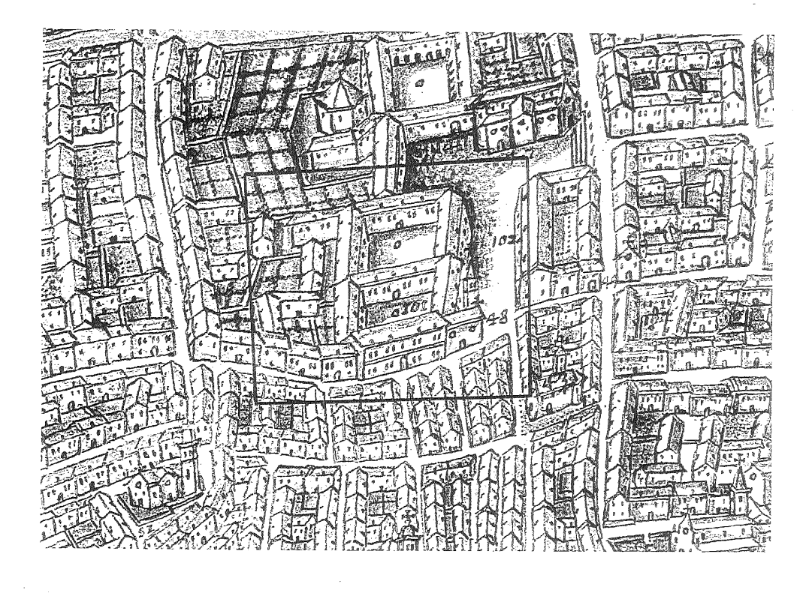Biblioteca Comunale Ariostea, Ferrara, (coll. XVI, n. 64), Pianta della città delineata di propria mano dell’Aleotti nella quale ci sono molte cose notabili, palazzo Bentivoglio, part.
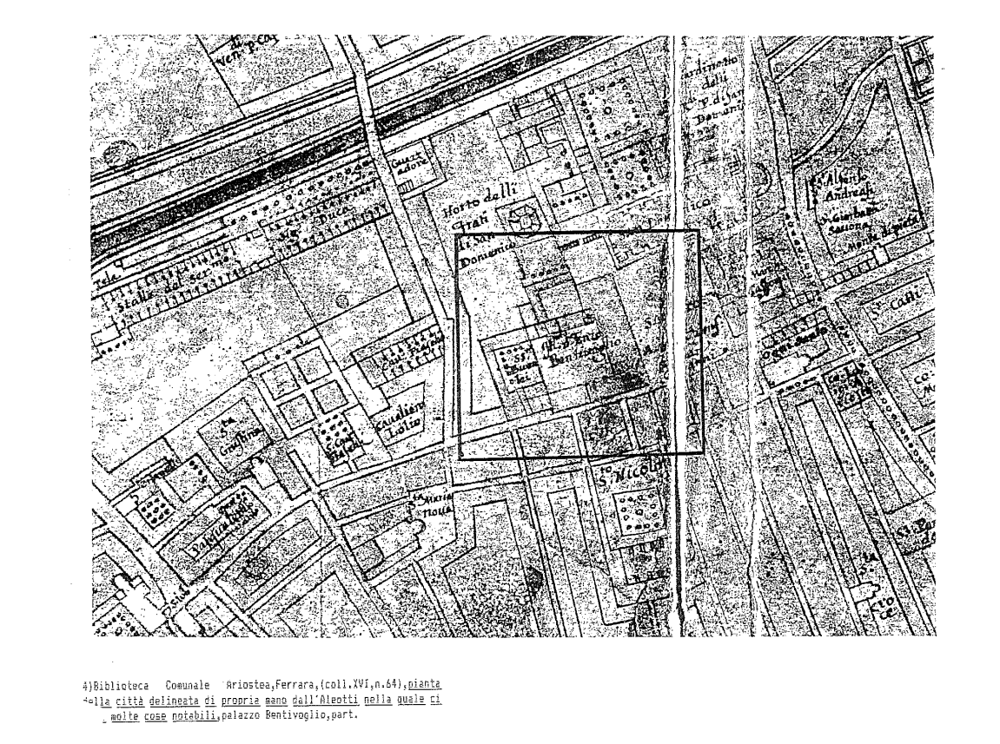Biblioteca Comunale Ariostea, Ferrara (coll. XVI, n. 67), Pianta della città di Ferrara delineata dal Bolzoni l’anno 1705, particolare del palazzo Bentivoglio, n. 101
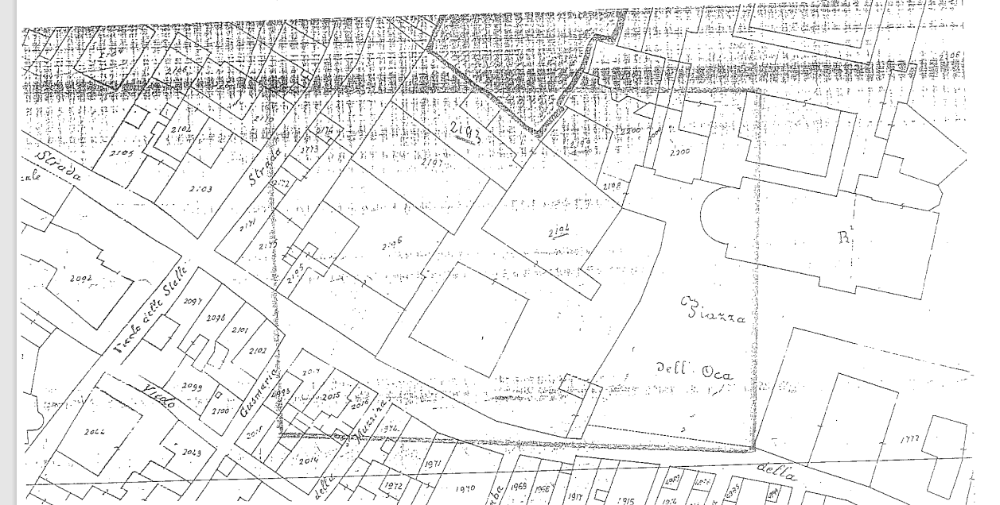Andrea Bolzoni, Pianta della città di Ferrara, III edizione del 1785, particolari di palazzo Bentivoglio
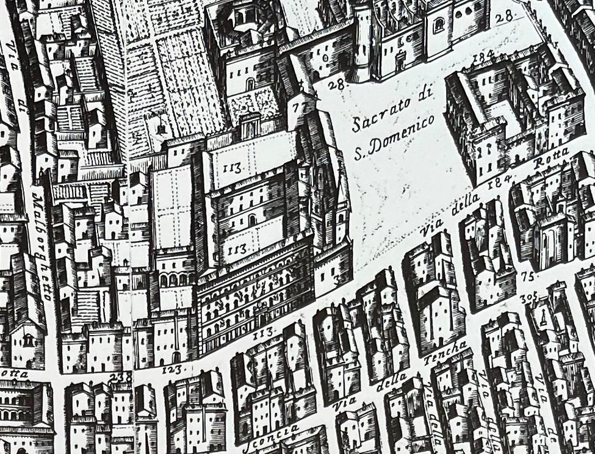Catasto Pontificio, a. 1842, foglio VIII, n. 2193-giardino Bentivoglio; 2194-casa di propria abitazione Bentivoglio; 2199-rimessa suddetto; 2196 Bertoni Vincenzo; 2197-giardino Bertoni Vincenzo; 2198-case d’affitto, Amministrazione dei beni ecclesiastici e camerali; 2199-orto Mantovani Gioacchino Pietro ed Antonio fratelli; 2200-case d’affitto; 2201-orto; 1772-Strozzi Massimiliano (il libro del Brogliardo è conservato presso l’Archivio di Stato di Ferrara).
I palazzi della Ferrara manierista
Del centro storico di Ferrara, incastonato all’interno delle Mura, i turisti e gli stessi ferraresi prediligono una serie di monumenti appartenenti principalmente al periodo tardo medievale e primo-rinascimentale che,
pur sintetizzando magistralmente una delle fasi storico-artistiche nelle quali Ferrara eccelse, non devono, però, portare a trascurare l’importanza dei palazzi del tardo Rinascimento.
A questo scopo, ci si propone di consigliare un itinerario che possa permettere la riscoperta di alcuni palazzi ferraresi che, in particolar modo negli stilemi che ne caratterizzano le facciate monumentali,
sono strettamente connessi a palazzo Bentivoglio e al contesto artistico di riferimento al quale appartengono: il Manierismo.
Si riproduce di seguito il particolare di una mappa turistica della città di Ferrara nella quale si evidenziano con un segnalino rosso (📍) i palazzi da noi inseriti nell’itinerario alla scoperta delle facciate manieriste ferraresi;
ad ogni segnalino è associato il numero che rimanda alla descrizione del palazzo corrispondente.
1. PALAZZO BENTIVOGLIO, via G. Garibaldi 90
“il Palazzo Bentivoglio di nobilissima Archittettura con trofei, imprese guerriere di marmo fatto da Cornelio Bentivoglio Generale del Duca Alfonso II, e Marchese di Gualtieri l’Anno 1584”4
Per informazioni storiche e di carattere stilistico relative a palazzo Bentivoglio, si vedano le altre sezioni di questo Sito.
2. PALAZZO BEVILACQUA - COSTABILI, via Voltapaletto 11
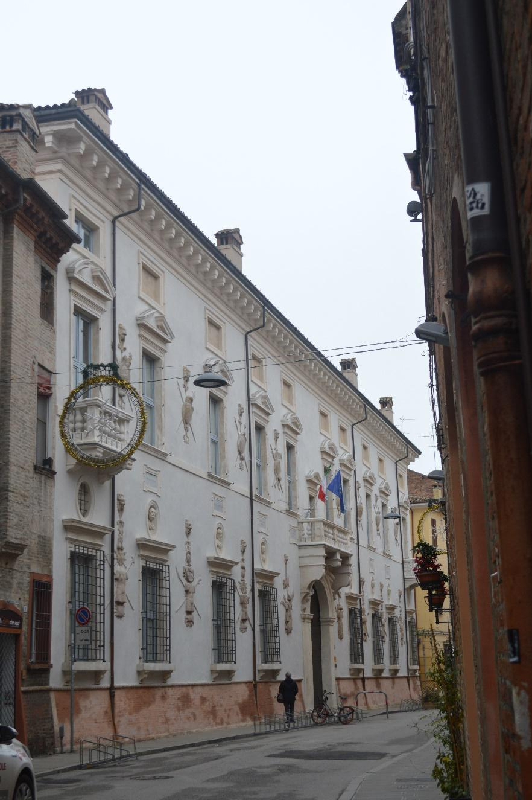“Su la strada per andar à S. Francesco si trova à sinistra il Palazo de Sig(no)ri Marchesi Cristino e Gherardo Bevilacqua, edificato da Cristin Francesco il primo circa l’anno 1430,
rimodernato ed ampliato dal Cardinal Bonifacio, col ripore nella facciata molti busti di cesari e filosofi, oltre molti trofei di marmo col armi gentilicie delle famiglie gia imparentate nella sua casa,
con molti mot
Il primo nucleo di palazzo Bevilacqua-Costabili fu realizzato dalla famiglia Bevilacqua-Aldobrandini nel 1430. Nel 1602, su concessione del Papa, il cardinale Bonifacio Bevilacqua,
commissionò lavori di abbellimento della facciata, poi completati nel 1710 da Ercole Bevilacqua. Nel 1830 il palazzo divenne proprietà del marchese Giovanbattista Costabili-Containi.
Nel 1916 il conte Francesco Mazza acquistò il palazzo dalla famiglia Costabili-Containi adibendolo a convitto femminile; divenne poi clinica privata per malattie psichiatriche, supermercato,
cinematografo, residenza privata e uffici; oggi è sede della Facoltà di Economia dell’Università di Ferrara.
La facciata del palazzo è attribuita all’architetto Giovan Battista Aleotti6.
La parte centrale del prospetto è caratterizzata dal portale di ingresso sormontato da un balcone sorretto da mensole a voluta, tra le quali sono posizionate due sculture raffiguranti la Concordia e la Verità.
Le finestre sono disposte su due ordini regolari, mentre il resto della facciata è decorato con nicchie che ospitano busti di imperatori romani e antichi filosofi, decorazioni plastiche in arenaria raffiguranti armature e trofei militari sostenuti da teste leonine e tabelle incise con motti latini decorate in oro.
3. PALAZZO CICOGNARA - SANI, via Terranuova 23

Palazzo Cicognara-Sani, anche noto come palazzo Masieri-Cicognara, costituisce uno degli esempi più significativi di architettura manierista ferrarese. La critica è concorde nell'attribuirne la facciata all'architetto Alberto Schiatti, che operò a Ferrara tra il 1567 e il 1586. Lo stile di Schiatti denota una formazione tipicamente ferrarese che lo rende un degno continuatore di Biagio Rossetti e di Girolamo da Carpi. Il palazzo, riproponendo lo schema architettonico di palazzo Naselli-Crispi7, presenta la cornice del portale e le estremità del prospetto decorati a bugnato. Le finestre del piano terra e del primo piano hanno cornici e timpani marmorei, mentre quelle del secondo piano sono realizzate in cotto. L’espediente di utilizzare il marmo a decoro dei soli primi due piani della facciata la rende, agli occhi dell’osservatore, progressivamente più leggera verso l’alto.
4. PALAZZO PARADISO, via delle Scienze 17
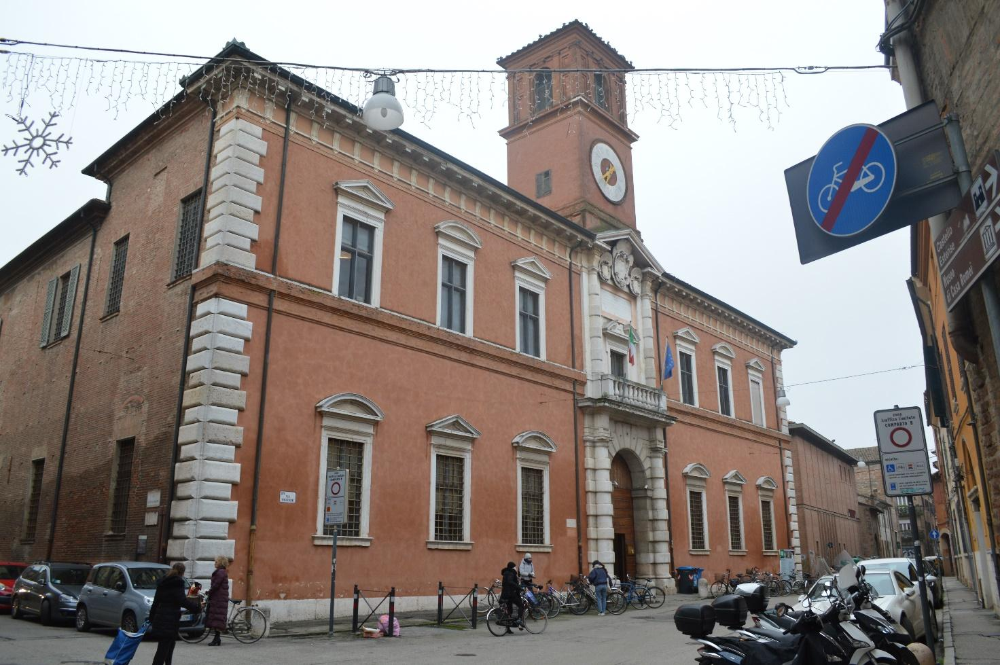“Su la strada detta volgarmente il gioco del Palone anticamente di Santa Maria di Boche, vedesi, à sinistra, andando verso la Piazza,
l’antica facciata del Palazzo detto di Paradiso, fabricato dal Marchese Alberto Estense l’anno 1391, ed ivi si vede la gran porta fatta à volto acuto, turrata […].
Restò questo Palazo dell’eredità del Cardinal Ippolito Estense il secondo, che da lui l’anno 1567 fù conceduto in affitto al nostro Publico per [scuole] unirvi dentro tutte le scuole delle Scienze di questo studio generale ed università,
che pienamente comprato dal Cardinal Luigi suo erede l anno 1586, devoluto alla S. Sede la Città e Ducato, fù risarcito, e fattali sù la strada di S. Agnese la bella facciata che si vede l’anno 1610,
col architettura di Gio(vanni) Battista Alioti, detto l’Argenta, conforme dinnota di tal riedificazione ed ornato la lapide sopra la gran porta d’ordine Toscano […].
[Nel Cortile]Nell’orto dei Semplici si vedono due Casse, una grande di marmo pario, ed altra piccola e nel Cortile con varie antichissime inscrizioni Romane raccolte dalla Città e territorio, che dinnotano l’antichità e coltura degli abitanti del nostro Paese, prima che Ferrara da Popoli che dalla furia di Atila fugirono fosse edificata, vi si vede la statua di Publio Paio, Medico del Magistrato dei Senviri qualli regolavano i sette vichi, ed altre di soldati e famiglie Romane, sì libere che liberte, che quivi possedevano ed avevano ridotto à coltura le nostre Campagne.
Verso l’orto dei Semplici, dalla parte superiore, per andar alla qualle s’ascende una nobil strada, trovasi la gran Biblioteca, principiata dal nostro Publico con la compra di tutti i Libri che furono del Cardinal Cornelio Bentivoglio,
accresciuto dal donativo d’altri persoaggi sì Ecclesiastici che secolari, in specie dal Sig(nor) Abbate Giuseppe Carli”.8
Palazzo Paradiso fu commissionato nel 1391 dal marchese Alberto d'Este, che ne fece l’abitazione del suo camerlengo Cabrino Roberti del quale aveva sposato la figlia Giovanna nel 1388. Nel 1438, per la sua magnificenza, il palazzo venne assegnato come dimora all’Imperatore d’Oriente Giovanni Paleologo, a Ferrara per partecipare al Concilio Ecumenico9. Nel 1586 il Comune l’acquistò dal Cardinale Luigi d’Este, figlio del duca Ercole II, per ospitarvi l’Università; in quest’occasione si affidarono dei lavori di ammodernamento all’architetto Alessandro Balbi10, poi portati a termine da Giovan Battista Aleotti nel 1610. Originariamente su via Giuoco del Pallone (dove anche oggi si può notare la sagoma dell’antico portone a sesto acuto), il prospetto principale di palazzo Paradiso divenne quello sull’attuale via Scienze, la cui facciata, di gusto classico, è caratterizzata dall'imponente portale in pietra a doppio ordine e torretta, su cui nel 1771 è stato posto l'orologio. Sulle colonne doriche, con larghe fasce di bugnato, si innesta il balcone; la finestra a porta è inserita in una grande edicola con frontone spezzato da tre scudi gentilizi. All’interno del palazzo sono ancora visibili brani di affreschi decorati con motivi ornamentali e scene cavalleresche di scuola ferrarese risalenti ai secoli XV e XVI, il Teatro Anatomico costruito nel 1731 dall'architetto Francesco Mazzarelli e l'ampio scalone realizzato nel 1779 da Antonio Foschini con decorazioni in stucco. A palazzo Paradiso si trova inoltre il monumento sepolcrale di Ludovico Ariosto, qui trasportato nel 1801, per ordine del comandante delle truppe francesi che occupavano Ferrara, dalla chiesa di San Benedetto, dove era stato realizzato fra il 1610 e il 1612 su disegno dell’Aleotti.
5. PALAZZO FABIANI - FREGUGLIA, via Madama 35
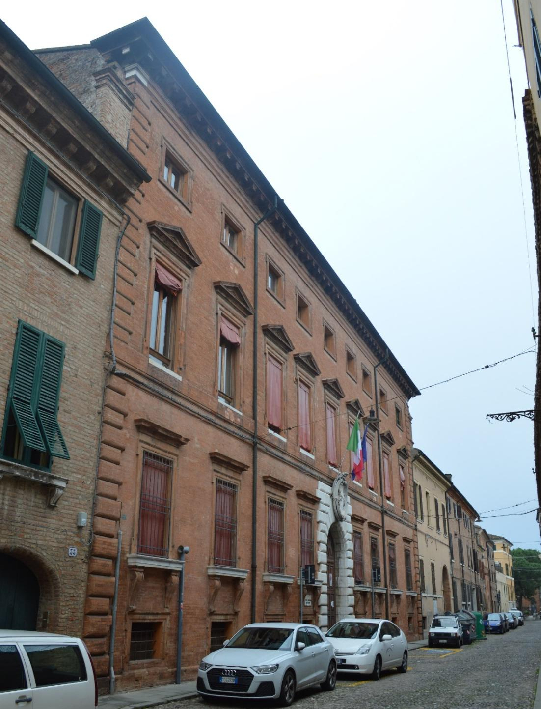“Nella strada di S.ta Maria in Vado, andando verso la Giovecca, vi sono à destra i magnifici Casamenti Fabiani, un volta
Palazzo Fabiani-Freguglia fu fatto costruire dalla famiglia Fabiani e passò alla famiglia Freguglia tra la fine del Seicento e l’inizio del Settecento.
La maggior parte delle decorazioni interne si devono ai Genta, che abitarono il palazzo fino al XIX secolo.
Negli anni ’20 del Novecento passò ai Polo che lo adibirono a collegio e lo tennero fino agli anni '60 del ‘900, quando l'Amministrazione Provinciale decise di acquistarlo e di trasformarlo in un istituto scolastico.
Attualmente è sede dell’Ufficio Scolastico Provinciale.
La facciata in cotto, con quattro ordini di finestre, presenta gli angoli e il portale, sormontato da uno stemma in pietra d’Istria, decorati a bugnato e le finestre timpanate in cotto.
6. PALAZZO CONTUGHI - GULINELLI, via Savonarola 38
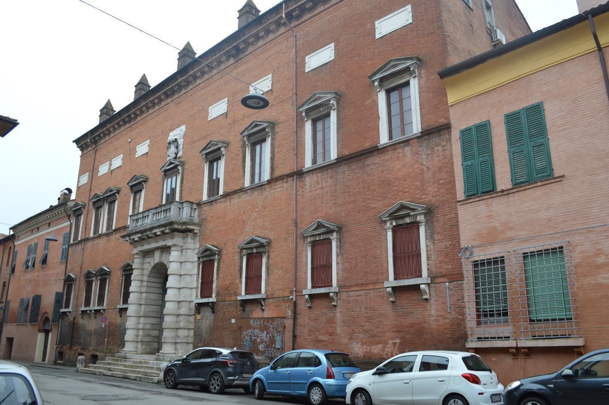“Ritornando verso S. Girolamo su questa strada v’è il magnifico Casamento con la superba porta e pozzo di marmo istriano di architettura rustica, finestre simili, e tabelle scritte à motti ebraici greci e latini, non compita dovendovi andare l’altre due con i motti arabi, principiato fù questo Palagio da Girolamo Contughi [goduto] posseduto oggidì da Sig(no)ri Dott. Gio(vanni) Girolamo e Giacopo medico fratelli Agnelli essendo falso ciò che gli Ebrei spargano nel volgo, che questa fosse una loro Sinagoga, quando per altro que testi Ebraici condannano la loro perfidia che li ha fatti precipitare nella palpabile esprimentata ignoranza in cui si trovano.”12
L'edificio fu costruito nel 1542 per volere del nobile Girolamo Mario Contughi e rimase della stessa famiglia per più di un secolo, fino a quando,
nel 1654, Francesco Antonio Contughi, indebitato, fu costretto a venderlo. Passò a vari proprietari e nel 1935 venne acquistato dal conte Olao Gulinelli.
Nel 1972 Alma Gulinelli donò il Palazzo all'Università di Ferrara.
La facciata è attribuita all'architetto Girolamo da Carpi, è in laterizio ed è scandita dalla regolare sequenza di due registri di finestre timpanate e incorniciate di marmo,
al di sopra del secondo ordine delle quali sono collocate targhe rettangolari di marmo con motti latini, greci ed ebraici.
Il portale, opera di Alessandro Balbi, al centro del prospetto, poggia su gradini ed è incorniciato da colonne doriche fasciate da nastri in bugnato,
sulle quali insiste un balcone con ringhiera in marmo. Al di sopra, il timpano della porta-finestra è coronato da uno scudo gentilizio.
L'interno è stato rimaneggiato tra il XIX e il XX secolo.
7. PALAZZO AVOGLI - TROTTI, via Montebello 10
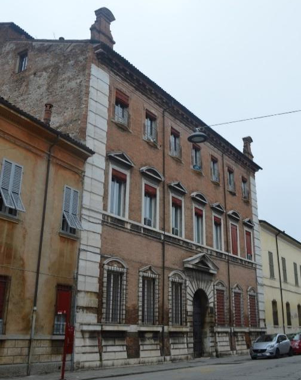Palazzo Avogli-Trotti, realizzato intorno al 1567 e attribuito all’architetto Alberto Schiatti, presenta un portale centrale a tutto sesto in bugnato sormontato da un imponente timpano in marmo; la facciata è scandita da tre ordini di finestre, incorniciate in marmo e sormontate alternativamente da timpani e lunette ai primi due piani e delimitate da una più semplice cornice in cotto al secondo piano, queste ingentilite, però, da balconcini semicircolari con eleganti ringhiere in ferro battuto. Gli angoli dell’edificio sono decorati a bugnato, così come gli zoccoli al di sotto delle mensole sulle quali poggiano le cornici delle finestre del piano terra.
8. PALAZZO VARANO - DOTTI, via Montebello 18
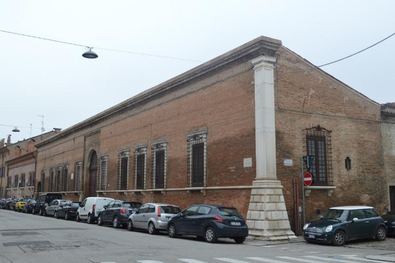“Il Palazzo del Sig(no)r D(on) Alfonso Varrano di Camerino la di cui facciata venne abbassata perché imperfetta, già fabricato della famiglia Carisi”13
La costruzione del palazzo Varano-Dotti risale al XVI secolo. L'edificio è composto da un corpo di fabbrica rettangolare centrale, arretrato rispetto al fronte stradale e da due ali laterali simmetriche, unite dalla facciata. Quest'ultima è caratterizzata da un portale a tutto sesto in cotto, originariamente decorato in marmo, e da finestre con cornice in pietra bianca. All'angolo con via Bellaria si trova un pilastro in marmo bianco con zoccolo in bugnato.
9. PALAZZO CALCAGNINI, via Montebello 33
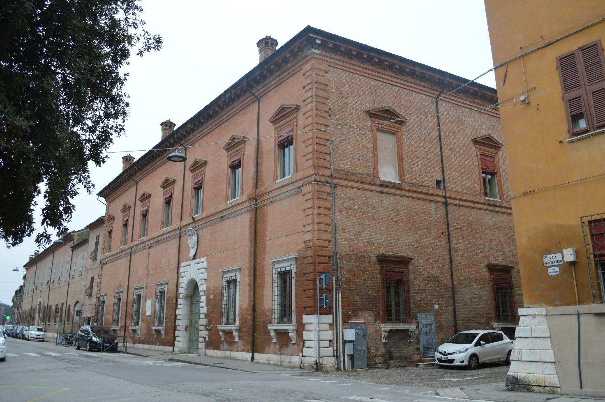“Paʃʃato il bel Casamento del Signor Conte della Pellegrina, e l’altro di fianco del Sig. Marcheʃe Teofilo Calcagnini, dirimpetto l’Orto di Santo Spirito”14
Palazzo Calcagnini, di fronte al sagrato della chiesa di Santo Spirito, venne realizzato per volere di Giacomo Grana tra il 1573 e il 1574.
Dal 1719 al 1892 il palazzo fu proprietà alla nobile famiglia Calcagnini.
Nel 1893 l’edificio venne venduto a Giovanni Grosoli, che nel 1906 lo affittò ai De Pisis; qui Filippo de Pisis trascorse i primi anni della sua formazione artistica.
Negli anni Venti del Novecento il palazzo venne acquistato da Emilio Arlotti, antifascista fucilato durante l’eccidio del Castello del 15 novembre 1943.
Il palazzo passò alla Società Immobiliare Montebello e Mentana che lo restaurò.
A partire dal 1990 è sede dell’Unione Industriali della Provincia di Ferrara.
La facciata è di ordine rustico, con il bugnato limitato agli angoli e al portale, sormontato da uno scudo gentilizio marmoreo.
Le finestre del piano terra sono incorniciate in marmo, mentre quelle del piano superiore, sovrastate da un timpano, in cotto.
10. PALAZZINA PARESCHI, via Cosmè Tura 8
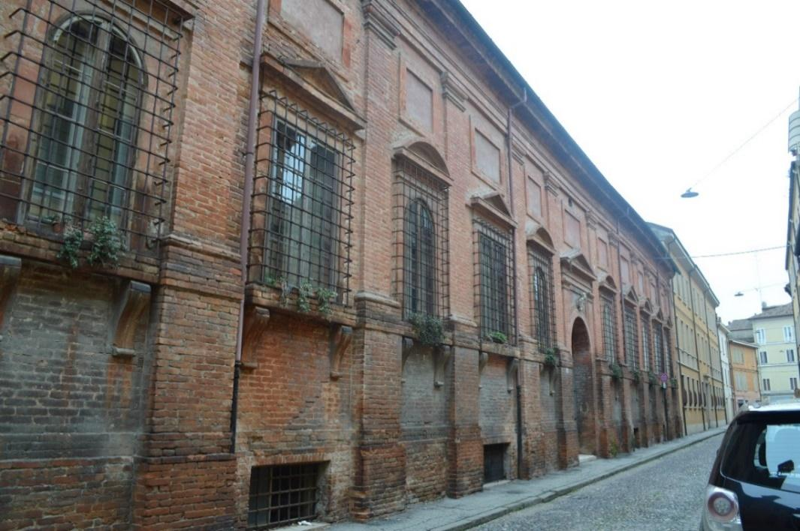La costruzione della palazzina Pareschi risale all'ultimo quarto del XVI secolo ed è attribuita a Giovan Battista Aleotti. La facciata in cotto presenta un portale a tutto sesto sormontato da un timpano ed è scandita verticalmente da un unico ordine di lesene doriche, poggianti su alte basi, fra le quali si inseriscono dieci finestre con bancali in cotto a mensola coronate da timpani triangolari e curvilinei alternati e sovrastate da tabelle rettangolari. Una cornice a fasce corona l'edificio. L'edificio presenta una parte completamente ristrutturata in seguito a un danneggiamento bellico.
Note
1 Biblioteca Comunale Ariostea, La creatione del sig. donno Alfonso II dvca qvinto di Ferrara, N. inv: 216250, Coll: MF 113.4.
2 Ibidem.
3 Ibidem.
4 G. A. SCALABRINI, Memorie istoriche delle chiese di Ferrara e de' suoi borghi. Italia: per C. Coatti. P. 59.
5 SCALABRINI, Guida per la città e i borghi di Ferrara in cinque giornate, Trascrizione a cura di Carla Frongia, Quaderni del Liceo Classico L. Ariosto 6, p. 67.
6 GIOVAN BATTISTA ALEOTTI: Architetto e ingegnere idraulico, nato in Argenta nel 1546. Operò in Ferrara, dove fu al servizio del duca Alfonso d'Este fino al 1597; passò poi alle dipendenze di papa Clemente VIII. Valente architetto militare, l'A. provvide al restauro del Castello Estense e di altre fortificazioni ferraresi, e alla costruzione dei nuovi bastioni di S. Paolo e di S. Pietro. Morì in Ferrara il 12 dicembre 1636. Il carattere severo proprio delle fortezze da lui costruite si ritrova anche in alcune sue costruzioni civili: così, per esempio, nel prospetto turrito del palazzo già del Paradiso e ora dell'Università, terminato nel 1610; e nella porta S. Paolo, eccellente costruzione, che ora appare schiacciata per la base interrata dal rialzamento degli argini del Po. Sempre in Ferrara gli sono attribuite le chiese di S. Carlo e di S. Barbara; così pure la torre dell'Arengo (1603) nella Piazza del Mercato e il monumento all'Ariosto, eseguito nel 1612, oggi nella Biblioteca comunale. Secondo il disegno dell'Aleotti, pur con qualche mutazione nella pianta, fu alzato tra il 1618 e il 1619 il Teatro Farnese di Parma, magnifico e ricco, che ricorda le forme dell'architettura veneta del Cinquecento. Della valentia dell'Aleotti come idraulico sono buona prova i lavori di bonifica alla Mesola, quelli di regolamento del Po e del Reno, nonché i suoi numerosi scritti. (R. NICCOLI, Enciclopedia Italiana, 1929).
7 PALAZZO NASELLI-CRISPI: Progettato intorno al 1531 da Girolamo da Carpi su commissione del canonico Giuliano Naselli, venne terminato nel 1536.
Nella seconda metà del XVI secolo il palazzo divenne proprietà del conte Giovanni Maria Crispi.
Il prospetto su via Borgoleoni è caratterizzato da un portale monumentale in bugnato in marmo bianco e rosa.
Il cortile, di forma rettangolare, presenta cinque arcate nei lati lunghi e tre nei lati corti, disposte su due ordini, ad imitazione del Teatro Marcello di Roma.
Nel portico di ingresso si può ammirare l’affresco della Madonna con Bambino, pure opera del Carpi; questo è l’unico affresco originario del palazzo giunto fino ai nostri giorni.
L'edificio ha subito notevoli danni in seguito al sisma del 2012.
Oggi il palazzo ospita la sede legale del Consorzio di Bonifica Pianura di Ferrara.
8 SCALABRINI, Guida per la città e i borghi di Ferrara in cinque giornate, op. cit., p. 146.
9 CONCILIO ECUMENICO FERRARA-FIRENZE: Con questo nome si suol designare il concilio aperto a Ferrara l'8 gennaio 1438 e che, trasferito l'anno seguente a Firenze, proclamò (6 luglio 1439) la unione fra la chiesa greca e quella latina. L'unione raggiunta dal concilio durò di fatto fino alla presa di Costantinopoli (29 maggio 1453), e fu ufficialmente dichiarata rotta da un concilio della chiesa greca tenuto a Costantinopoli nel 1472. (P. PASCHINI, Enciclopedia Italiana, 1932).
10 ALESSANDRO BALBI: Nacque a Ferrara da famiglia originaria del Finale. Godette in patria dei favori della casa d'Este: fu infatti per incarico del duca Alfonso II che eseguì nel 1594 a Ferrara la cappella del Sangue Miracoloso in Santa Maria in Vado, unica sua opera certa che ci sia nota. La costruzione è in forma di edicola, a due ordini sovrapposti di colonne, sormontati da una cupola su alto tamburo poligonale, nel quale si aprono profonde nicchie. Il gusto palladiano si rivela con chiarezza nel motivo fondamentale delle colonne classicamente trabeate, nel luminoso alternarsi degli spazi e soprattutto nel frontone triangolare che sovrasta il prospetto, quasi come in un protiro neoclassico. Difficile giudicare la seconda maggiore impresa, documentata dalle fonti, il progetto per la costruzione del santuario di Santa Maria della Ghiara a Reggio Emilia, iniziata nel 1597, poiché tale progetto, scelto fra gli altri in occasione del concorso che fu bandito in Ferrara dal duca stesso, fu sostituito a pochi anni dall'inizio dei lavori, e l'opera fu portata a termine da Francesco Pacchioni, architetto ferrarese, per la sopraggiunta morte del Balbi. Il nome del B. compare inoltre nei documenti riguardanti la costruzione del palazzo dell'università e del campanile del duomo di Ferrara, in corso nell'ultimo decennio del secolo sotto la direzione di Giovanni Battista Aleotti, architetto ferrarese. La testimonianza secondo la quale la morte del B. sarebbe avvenuta "pochi anni dopo" il 6 giugno 1597, data dell'inizio dei lavori di Santa Maria della Ghiara a Reggio Emilia, può essere messa in relazione col "necrologio" riportato dal Cavallini (1878), in cui si ricorda un "Balbi Alessandro morto 10 sett. 1604 sepolto in San Girolamo"; documento che può ritenersi solo parzialmente esatto dal momento che il B. fu sepolto in patria, nella chiesa di S. Francesco. (T. FERRATINI, Dizionario Biografico degli Italiani, Volume 5, 1963).
11 SCALABRINI, Guida per la città e i borghi di Ferrara in cinque giornate, op. cit., p. 94.
12 Ivi, p. 83.
13 Ivi, p. 54.
14 G. A. SCALABRINI, Memorie istoriche delle chiese di Ferrara e de’ suoi borghi, op. cit. P. 160.